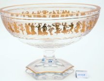
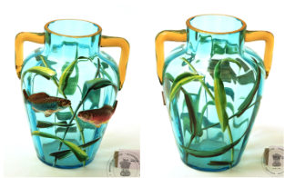
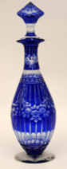
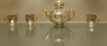
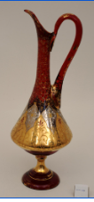
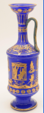
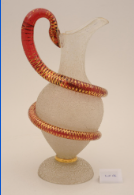
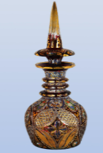
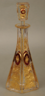
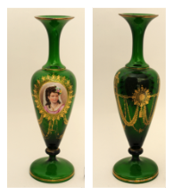

গ্লাস গ্যালারির প্রদর্শিতবস্তু সমূহ
Explore selected glass objects from the Salar Jung Museum, including Venetian and Bohemian vases, bowls, decanters, a tea set and a covered goblet.

LVIII-378: বাটি

MS-2204: বাটি

LVIII-422: কোবাল্ট ব্লু কাট ক্রিস্টাল ডিক্যান্টার

MS-1686: টি-সেট

LVIII-221: ভেনিসীয় কাঁচের ইউয়ার বা ডিক্যান্টার

MS-4560: ভেনিসীয় কাচের আলংকারিক ফুলদানি/ডিক্যান্টার

LVIII-136: বোহেমিয়ান বা ভেনিসিয়ান ফ্রস্টেড গ্লাসের ইওয়ার বা জগ

MS-2943: ডিক্যান্টার

LVIII-387: অলঙ্কৃত ফুলদানি

LVIII-371: ঢাকনা-সহ বোহেমিয়ান ক্রিস্টাল ডিক্যান্টার

MS-1698: ঢাকনাযুক্ত বোহেমিয়ান অ্যাম্বার-রঞ্জিত পানপাত্র
